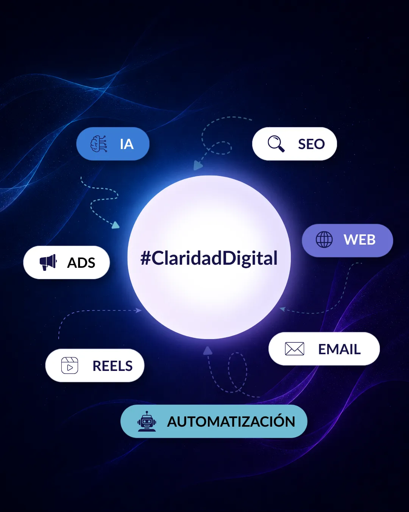
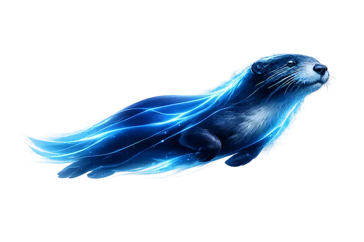
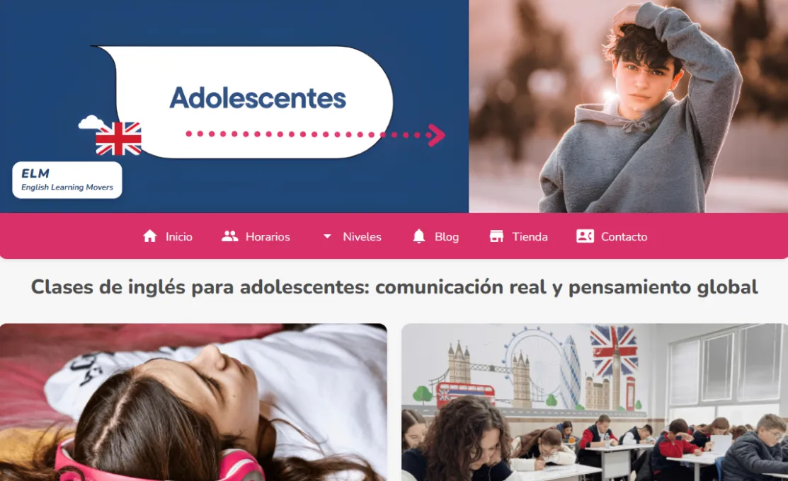
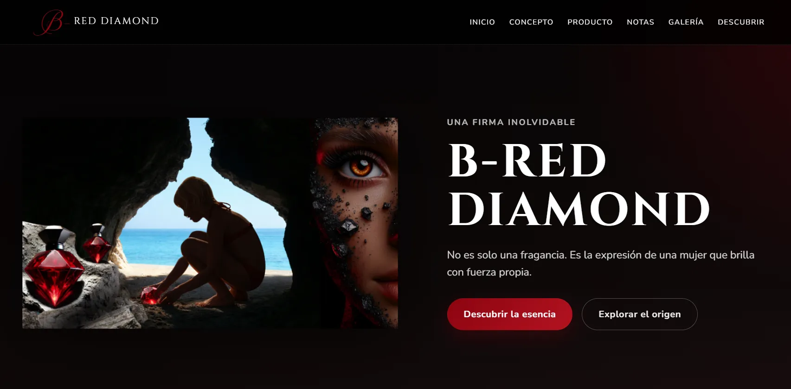

01
Observa
Antes de hacer más, entendemos qué está frenando tu crecimiento.
Filtramos el exceso de información, reorganizamos herramientas digitales e impulsamos el crecimiento de tu marca.

OtterFlow presenta
No necesitas más información. Necesitas saber hacia dónde ir.
No necesitas otra herramienta más. Necesitas oportunidades de negocio.
Antes de hacer más, entendemos qué está frenando tu crecimiento.
Convertimos posibilidades en prioridades.
No creemos en recetas genéricas. Transformamos decisiones en acciones reales.
La tecnología cambia. Los hábitos cambian.La forma de elegir tu marca también.

Del análisis a la acción.

CASO 01
Un proyecto centrado en simplificar la toma de decisiones de las familias mediante una experiencia web clara, accesible y pensada para facilitar el proceso de matriculación.
Claridad · UX · Conversión
Explorar experiencia →
CASO 02
Una experiencia digital diseñada para despertar curiosidad y emoción a través de un recorrido visual que revela la historia detrás de la marca.
Narrativa visual · Storytelling · Experiencia digital
Explorar experiencia →Mejores decisiones. Mejores resultados.
Cuando todo parece urgente, resulta difícil saber qué hacer primero. Analizamos tu situación para identificar prioridades y tomar decisiones con más criterio
Auditoría Digital · Marca · Posicionamiento · SEO Básico
Transformamos ideas, servicios o marcas en experiencias digitales más claras, comprensibles y fáciles de recorrer.
Landing Pages · Web · UX · Conversión
Convertimos ideas dispersas en mensajes claros para que tu marca comunique mejor, genere confianza y mantenga presencia.
RRSS · Storytelling · Reels · Posts · Comunicación
Incorporamos automatizaciones e IA aplicada para reducir tareas repetitivas y liberar tiempo para lo que realmente aporta valor.
IA Aplicada · Automatizaciones · Email Marketing · Ads
Porque no se trata solo de crear una web o publicar contenido. Se trata de entender qué necesita tu marca para avanzar.
Antes de proponer soluciones, entendemos qué está frenando el crecimiento de tu negocio.
No necesitas estar en todas partes. Necesitas identificar qué oportunidades merecen tu atención.
Los cambios son constantes e incluso confunden. Nos centramos en las oportunidades que realmente importan.
Quizá tu próxima oportunidad de crecimiento empiece aquí.
CONTACTO
Cuéntame dónde está tu marca ahora y qué quieres conseguir. Empezaremos por identificar qué oportunidades tienen más sentido para tu negocio.